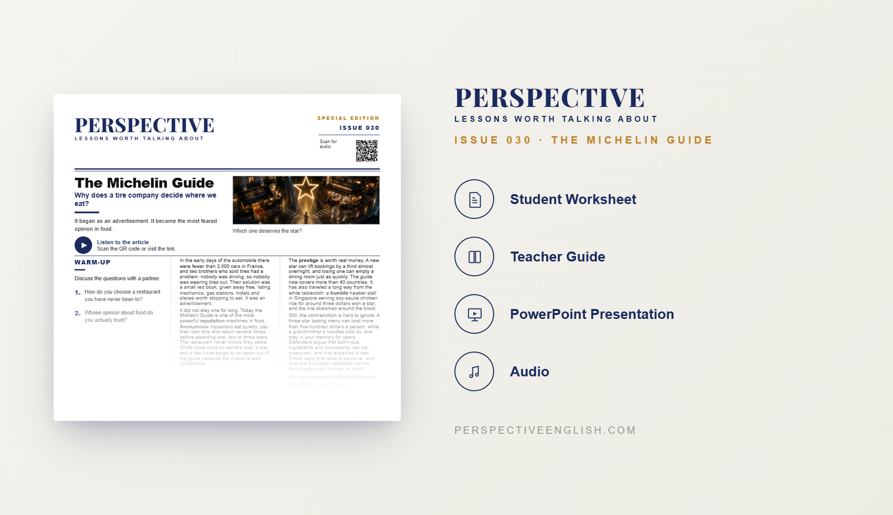

SPECIAL EDITION · ISSUE 030
The Michelin Guide
Who decides what good food is?
A ready-to-teach English lesson exploring Michelin stars, restaurant ratings, anonymous inspectors, food culture, prestige, and whether anyone can really decide what makes food great.
Collection 05 includes Issues 026–030.
LESSON PREVIEW

ABOUT THIS LESSON
For more than a century, the Michelin Guide has influenced where people eat and which restaurants are considered among the best in the world. Yet its story began not with chefs, but with a tire company trying to encourage people to drive more.
Today, anonymous Michelin inspectors visit restaurants and award up to three stars. A single star can transform a restaurant's reputation, while losing one can create enormous pressure for chefs and owners.
This magazine-style English lesson explores Michelin's unusual history, the power of restaurant ratings, and whether great food can ever be judged objectively. Students read an original article and take part in vocabulary, discussion, critical-thinking, speaking, and writing activities about taste, price, prestige, tradition, and food culture.
FROM THE ARTICLE
WHAT'S INCLUDED
- Magazine-style student worksheet
- Original article and audio recording
- Vocabulary and reading activities
- Discussion and critical-thinking tasks
- Michelin inspector decision-making activity
- Speaking challenge and writing prompt
- Teacher guide and complete answer key
- Classroom presentation
GET THE COMPLETE LESSON
Ready to teach The Michelin Guide?
Purchase the complete lesson for instant classroom use.
Secure checkout and instant digital delivery through Payhip.
Collection 05 includes Issues 026–030.